Moshi Moshi
Smartphones are a common topic here on Edge of Emulation. In many ways, older portable gaming consoles like the Game Boy Advance provided the kind of functionality we expect from our modern devices. For example, there were several options for viewing multimedia content on the GBA. From albums full of MP3s to feature-length films, Nintendo's handheld seemed capable of doing anything, with the right peripheral of course. Despite most people mainly using phones as web browsers these days, their original purpose was to talk to other people by calling their number. Believe it or not, the GBA had this covered as well.
In July of 2004, a Japanese company called Digital Act released a specialized cartridge called the Campho Advance. The hardware inside provided the system with a miniature camera along with a telephone modem. It enabled the GBA to make and receive video phone calls via landline connections (POTS), in Japan at least. By connecting to the telephone system, it could dial others and send audio/video data in real-time. The product came with its own microphone earpiece since the GBA lacked any kind of native voice input.
Today, users are quite spoiled for video chat options. Any app on your phone can wirelessly connect to the internet and setup videoconferencing. Online meetings with coworkers and bosses were fresh and different at the start of COVID-19, but now they're old news and about as exciting as a migrane. However, for most consumers back in the late 90s, video chats were far from common. The necessary hardware certainly existed as early as the 1960s, but for decades it was expensive and typically reserved for the likes of businesses and governments. Internet webcams gradually took off as the 2000s approached, yet the earliest forms probably proved too daunting for many low-tech users. All in all, video telecommunications remained inaccessible to the masses for one reason or another, just another fancy bit of science mostly seen in movies or TV shows.
The Campho Advance was part of an effort to change this situation. By using a well-known handheld console, anyone could easily operate both the software and the videophone. Working with a platform as popular and common as the GBA also kept hardware minimal, meaning the whole thing could be assembled in mere minutes. After plugging the cartridge into the system and attaching a few cables, the Campho Advance was good to go once powered on. The peripheral aimed to do away with all of the mystery of videochats by making everything incredibly straightforward. To the device's credit, it really did "just work", as all magical technology should.
Sadly, the Campho Advance never gained much traction. It was quite expensive at 19,000 yen, and only 10,000 units were produced for sale. Buyers had to order it directly from Digital Act through the mail. Additionally, the Campho Advance had some notable limitations, such as a maximum framerate of 5FPS, a 0.11 megapixel camera resolution, poor lighting from AGB-001 and AGS-001 Game Boy models, and the fact that videocalls only worked with other Campho Advance users. Needless to say, the Campho Advance only had a brief moment of relevance before mobile phones took up the mantle of video communication in Japan and eventually the world.
Like so much unique hardware for video game consoles, the Campho Advance ended up falling into obscurity. Even so, it represents a serious attempt at changing the technological status quo of that era. Regardless of whatever missteps were taken by Digital Act, they ultimately made a competent product that did everything they claimed it could. As such, the Campho Advance is an important part of the Game Boy's history that needs to be preserved. This means cracking it open, delving into its secrets, documenting its mysteries, and recreating all of its functionalities. That's right, it's time to turn a GBA emulator into fully working video chat program.
Dumping the Undumped
The Campho Advance is a fairly rare piece of hardware. Although only a few thousand specimens were made, there's still a healthy amount being sold online today, at least as far as collectors are concerned. With our current technology, there's not much practical use in the Campho Advance, so it's not exactly in high demand. At any rate, it seems in recent years it's become somewhat easier to obtain one for a few hundred USD. For reference, I purchased mine way back in March 2021.
Getting my hands on a Campho Advance was vital to properly emulating the device. Obviously I needed the hardware for testing purposes, but more crucially, I had to extract the ROM. As fate would have it, the Campho Advance was previously undumped. No one had managed to grab the data stored inside the cartridge. Without that, I can't emulate anything. More importantly, without a complete ROM dump, the Campho Advance risked becoming lost media. Given the limited finite number of working Campho Advances and the general lack of awareness about its status, and we could easily have a crisis where it just disappears after a few more decades.
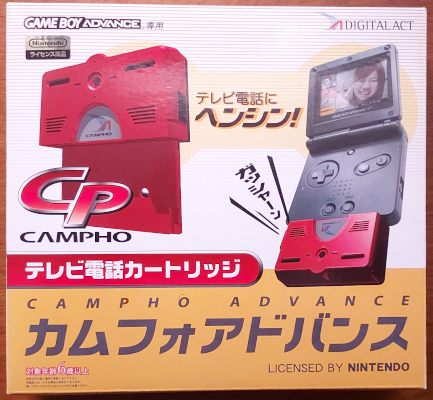 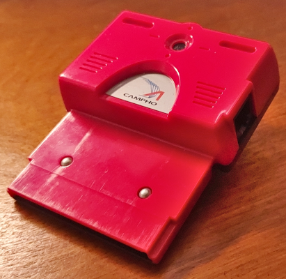
The Campho Advance is not only hard to find, it's hard to dump as well.
For my research to even start, I had to dump the ROM, at least partially. Now, normally this is a simple task. There are at least 3 or 4 well established methods of dumping GBA cartridges using homebrew or dedicated setups like the GBxCartRW. My most preferred method is using the GBA Backup Tool on the NDS. The software reads whatever is in Slot-2 and tries to save the contents to the SD card of a flashcart. It works fine for standard game carts, but there was an issue with the Campho Advance. The DS simply refused to boot when the Campho Advance was inserted.
More specifically, the Campho Advance requires power via a small cable (the GBA SP AC adapter, aka AGS-002). If that isn't plugged in, the GBA will not recognize the Campho Advance. If it is plugged it, the NDS freezes and won't start up. The handheld gets stuck on a white screen. This was a very curious phenomenon, one I confirmed with several others who also owned a Campho Advance. One common theory floated around was that the power requirements of the Campho Advance were somehow interferring with the NDS' initialization. Without the power cable, the NDS booted up just fine, although it couldn't see anything in Slot-2. Given this situation, I had to choose another method of dumping the ROM.
Since the NDS didn't want to dump the Campho Advance, I thought maybe some Wii homebrew might solve the problem. Conceivably, the GBA Link Cable Dumper by FIX94 should have done the trick. Whatever issues the NDS had when plugging a power cable into the Campho Advance should have been moot now, since this Wii homebrew would be working with a GBA. The dumping would happen via the GBA<->GCN cable, so surely everything would just work right? Unfortunately, every time I tried it, I got seemingly unusable data. I expected to see something that looked like the Cartridge Header or valid ARM/THUMB code, however, the bytes that showed up in the dumps were random data apparently.
It appeared that standard dumping tools weren't going to help here. For whatever reason, the Campho Advance needed specialized software to dump the cartridge, and it looked like I'd have to make it by hand. To begin, I made simple homebrew that would be transferred to the GBA as a MultiBoot program. Its only task was to read the first few bytes of the ROM and display whatever it found. By reading the very start of ROM data at 0x8000000, this homebrew should have grabbed the Cartridge Header. The very beginning is a branch instruction followed by the "NINTENDO" logo. I just wanted to verify that something, anything could be read from the Campho Advance.
Curiously enough, my homebrew probe returned what looked like ARM code. Although it only displayed a list of 32-bit hexadecimal values, over the years I've gotten pretty good at spotting (and even sometimes reading) ARMv4/ARMv5 code just from hex values. Let's just say I've done a lot of debugging... Anyway, the results were quite surprising, because the Cartridge Header was nowhere to be found. Instead, I had stumbled upon code that ran right after booting from the GBA's BIOS, or so I assumed. After using an online tool to convert the hex values into legible ARM instructions, I saw that the code was setting up the GBA's display by writing to the DISPCNT register. After that it did something much more interesting.
E3A07640 mov r7, #0x4000000 E3A00004 mov r0, #0x04 E3800E40 orr r0, #0x400 E5870000 str r0, [r7]
The initial ARM code found on the Campho Advance.
The Campho Advance's code wrote the value 0xA00A to the memory location 0x8010000. Ordinarily, that address is part of ROM, therefore it should be read-only on normal cartridges. Obviously, the Campho Advance is not a normal cartridge, so this indicated that it was handling some sort of unique I/O. If the Campho Advance relied on that I/O to read bytes from ROM, then it was no wonder other tools weren't capable of dumping anything. Most software designed to dump GBA carts merely read each byte sequentially from the expected memory address range reserved for ROM. They don't try to write to any cartridge-based registers or toggle any sorts of inputs.
At any rate, the Campho Advance seemed to read a bunch of code and copy that to the GBA's fast 32KB of Work RAM at 0x3000000, then it jumped to that location for execution. I guessed I was looking at some kind of bootstrap process. The code in Work RAM would write to several of the Campho Advance's registers before reading a block of data that would be saved to the larger, slower 256KB Work Ram at 0x2000000. Once it had read enough blocks, it jumped to the start of slow Work RAM to execute the code it had just pulled. That was as far as I could analyze things, since I didn't know what kind of data the Campho Advance was getting from those mysterious blocks.
To find out, I'd have to make another homebrew probe that recreated the Campho Advance's bootstrap process. This was straightforward enough, since I had all of the original code the Campho Advance itself used. One detail in particular puzzled me about the bootstrap, however. Whenever the Campho Advance read those data blocks, it always read them as 16-bit values from a fixed address, 0x80000000. Now, I could understand if it started at that address and incremented, but this address never changed. Somehow, despite using a fixed address for each read, it seemed to be reading lots and lots of different bytes?
This behavior in and of itself is not unusual to see in computing, much less on the GBA. Certain DMA transfers can work just like this, particularly the Sound FIFOs used for PCM/Direct Sound channels. But seeing something like this being used for ROM data on a cartridge is just weird. I immediately suspected that the Campho Advance did some kind of "streaming" for its ROM. That is to say, internally, the Campho Advance has a pointer that selects a byte from ROM that it will return whenever the CPU reads from 0x8000000. Every read automatically advances the pointer. That was the working theory I had at least.
My next task was to devise some homebrew that would read the data blocks just like the Campho Advance bootstrap and dump the results. That whole process is rather elaborate. Once again, this is something standard ROM dumping programs don't do at all. The first step is to prep the Campho Advance to read each block by writing the value 0xA00A to a hardware register located at 0x8014000. I called this register ROM_CNT since it seemed to control access to parts of the Campho Advance's ROM. Next a while loop checks the value of a second register located at 0x8010000, or ROM_STAT as I called it, since it appeared to report the status of certain operations. The loop executes for as long as ROM_CNT is NOT equal to 0xA00A.
Inside the loop, a pair of 16-bit values are read before accessing a block. The Campho Advance isn't picky about where the CPU read from, so long as it's in the range of 0x8000000 - 0x8007FFF. The 16-bit values contain some metadata about the following block of ROM. The first is a sort of "Block ID", that goes from 0xCC00 - 0xCC0F. After that, the next 16-bit value represents the total number of bytes inside the block. With that information in hand, the CPU can continue reading data in 16-bit units from the above address range for the given size of a block. Curiously, the final block ID changes to 0xCD00, which indicates the end of ROM data. This block is a dummy and has a length of zero bytes. The section below shows a step-by-step psuedo-code implementation with a few more details thrown in.
//Preps a block for reading
ROM_CNT = 0xA00A
CHECK_LOOP:
//Empty while loop, run indefinitely until condition is true
WHILE (ROM_STAT & 0xA00A) NOT EQUAL TO 0xA00A
//Read Block ID and Block Length
ROM_STAT = 0xA00A
BLOCK_ID = READ 16 BITS FROM [0x8000000]
BLOCK_LEN = READ 16 BITS FROM [0x8000000]
//Read data as long as Block ID is not 0xCD00
IF BLOCK_ID NOT EQUAL TO 0xCD00
//Read data, store in WRAM
WHILE BLOCK_LEN NOT EQUAL TO 0x00
DATA_VAL = READ 16 BITS FROM [0x8000000]
[0x2000000 + INDEX] = DATA_VAL
INDEX = INDEX + 2
BLOCK_LEN = BLOCK_LEN - 2
//Resets stuff for read next block
[0x8000000] = 0x00
[0x8000000] = 0x00
ROM_CNT = 0xA00A
GOTO CHECK_LOOP
Anyway, this was fairly simple to recreate in the C programming language, so after a few adjustments I had homebrew that properly dumped the entire ROM data of the Campho Advance. Each block measured in at 4090 bytes of raw data and 4 bytes of metadata. There were a total of 16 blocks, so altogether the final binary came out to 65,508, basically just shy of 64KB. The data was transferred in real-time via the GBA<->GCN cable to my Wii. I pulled the dumped ROM from the console's SD card and brought it back to my PC for further study. As expected, I recognized some ARM CPU instructions when I looked at the data in a hex editor. There were other fascinating tidbits too, like ASCII strings mentioning dial tones, modems, answering calls, and hanging up. What I had in my hands was legit. All that was left now was to run the ROM and see what it did.
Graphic Content
In order to truly start executing and debugging the Campho Advance's ROM, I had to change a few things in GBE+ to support what data I'd gotten so far. I had both the bootstrap and ROM, but GBE+ needed new code to handle the weird way bytes are streamed from the cartridge along with the unique I/O used to copy ROM blocks. I decided that I'd just lump the bootstrap and ROM into a single binary file and have GBE+ splice it up manually. After some trial and error, I finally got the emulator to recreate the Campho Advance boot process, at least as far as I understood it at the time. The moment of truth came after all the ROM blocks were copied to the emulated GBA's slow WRAM to start running.
The ROM's code did some pretty normal post-boot stuff like setting up the stack and clearing out the the GBA's 32KB of fast WRAM. As I let it continue on its own, I noticed that the Campho Advance was reading from and writing to several unusual addresses, as shown below:
WRITE :: 0xa010000 :: 0x15 WRITE :: 0xa010001 :: 0x40 WRITE :: 0xa008000 :: 0x42 WRITE :: 0xa008001 :: 0xb7 WRITE :: 0xa008000 :: 0x1 WRITE :: 0xa008001 :: 0x0 WRITE :: 0xa008000 :: 0x0 WRITE :: 0xa008001 :: 0x60 WRITE :: 0xa008000 :: 0x0 WRITE :: 0xa008001 :: 0x0 WRITE :: 0xa008000 :: 0xff WRITE :: 0xa008001 :: 0xff WRITE :: 0xa008000 :: 0xff WRITE :: 0xa008001 :: 0xff WRITE :: 0xa014000 :: 0x15 WRITE :: 0xa014001 :: 0x40 READ :: 0xa010000 READ :: 0xa010001 READ :: 0xa008000 READ :: 0xa008001 READ :: 0xa008000 READ :: 0xa008001 READ :: 0xa008000
As far as I could tell, it was still writing to the hardware registers ROM_CNT and ROM_STAT. However, these addresses were now mirrored to the 0xA000000 range. I had no idea what all those writes were doing, nor did I have any clue what the code was really looking for when I disassembled it in Ghidra. The exact purpose of these writes was temporarily set aside; first, I needed to find out what values the Campho Advance returned when reading ROM. Furthermore, it seemed like it was reading from and writing to a very specific portion of ROM, at the memory address 0xA008000, something I took note of for later.
I quickly reworked my ROM dumping program to also recreate these new ROM writes and see what data was returned. Here, I just wanted to read a pair of 16-bit values, which turned out to be 0x280A and 0x01F4. I had no idea what their significance was, but I plugged them into GBE+'s debugger anyway. To my delight, the Campho Advance's code started writing to some cartridge registers again. The pattern was very similar to what I received last time:
WRITE :: 0xa010000 :: 0x15 WRITE :: 0xa010001 :: 0x40 WRITE :: 0xa008000 :: 0x42 WRITE :: 0xa008001 :: 0xb7 WRITE :: 0xa008000 :: 0x1 WRITE :: 0xa008001 :: 0x0 WRITE :: 0xa008000 :: 0x0 WRITE :: 0xa008001 :: 0x60 WRITE :: 0xa008000 :: 0x0 WRITE :: 0xa008001 :: 0x0 WRITE :: 0xa008000 :: 0x0 WRITE :: 0xa008001 :: 0x0 WRITE :: 0xa008000 :: 0x0 WRITE :: 0xa008001 :: 0x0 WRITE :: 0xa014000 :: 0x15 WRITE :: 0xa014001 :: 0x40
Once again, I edited my ROM dumping program, turning it into a probe as well. The homebrew followed the exact same reads and writes. In GBE+, the Campho Advance read from a bunch of bytes from ROM, 4,048 to be exact. I had expected it to read more code, but the data returned was neither valid ARM or THUMB code. Instead, it was largely a few bytes that kept repeating in a sort of pattern. When I viewed the results in a hex editor, I suspected I was looking at some kind of graphics data, specifically a font or some symbols. At first glance, it looked like the 15bpp format used for the GBA's bitmap modes. This was rather puzzling, as I thought the 64KB ROM I had dumped already contained everything the Campho Advance needed.
As I let the Campho Advance run in GBE+, it mostly kept doing the same writes and reads as shown above, except one of the values written to ROM periodically changed. I guessed that I was looking at a command being issued to the Campho Advance to read graphics data, which would be broken up into blocks as well. With this in mind, I concluded that the actual code needed to run the Campho Advance was its own separate thing. The 64KB of ROM that I had dumped was then relabeled as Program ROM, while this new data was called Graphics ROM. Anyone familiar with NES mappers will recognize this kind of segregation of data, but something like this is completely foreign for the Game Boy family. On these handhelds, code and graphics typically exist anywhere there's space on a cartridge.
Regardless of this oddity, I started emulating this behavior in GBE+. My first attempt was somewhat clumsy. From what I had seen, the Campho Advance's command to read Graphics ROM worked like this:
ROM_STAT = 0x4015 //Read Command [0xA008000] = 0xB742 //Unknown Parameter, always 1 for reads [0xA008000] = 0x0001 //32-bit bank # [0xA008000] = GRAPHICS_ROM_BANK_LO [0xA008000] = GRAPHICS_ROM_BANK_HI //32-bit offset [0xA008000] = GRAPHICS_ROM_OFFSET_LO [0xA008000] = GRAPHICS_ROM_OFFSET_HI ROM_CNT = 0x4015 READ BYTES FROM 0x8008000 AS NECESSARY
GRAPHICS_ROM_BANK was effectively an ID for reading a particular set of related graphics data. Only so much graphics could be read in one go, so GRAPHICS_ROM_OFFSET was used to read the next chunk within the a bank. That was simple enough, but the bank IDs seemed to jump all over the place with no rhyme or reason. It went something like 0x6000 to 0xC000 to 0x2001. It looked very random to say the least. Even as I dumped each individual bank, I had to make sure GBE+ could match the appropiate ID correctly, all while ideally maintaining a single binary file. I came up with an elaborate metadata header that GBE+ would read to separate the Program ROM and each bank of the Graphics ROM. It was somewhat ham-fisted, but it worked.
Now things were beginning to take shape. GBE+ could now process commands for Graphics ROM, and it would alert me every time an undumped bank was requested. When that happened, I'd change my homebrew dumper a bit and extract the necessary bits. After that, I'd edit the binary file and metadata and try again. I had to do this dozens of times. There is A LOT of graphics data on the Campho Advance, and it doesn't help that it's all bitmaps rather than tile sets. Eventually, however, the code stopped sending commands to read Graphics ROM. Out of the blue, there it was, the main screen of Campho Advance!

After a great deal of research, I was finally able to reach this menu.
Caught On Camera
So, now the Campho Advance was finally booting in an emulator. However, before anymore progress could be made, I found out I'd need to keep dumping more data. On the main menu, there are basically 2 options: make a phone call or change user settings. Either menu was inaccessible though. I couldn't initiate a call, nor could I even move the cursor down to play with the settings. GBE+'s logs showed that the Campho Advance was at least responding to input, as several more commands were sent for Graphics ROM. Apparently, I would need to keep dumping graphics data as I encountered new banks. Remember that at the time, each bank ID appeared random to me, as did the length of each bank. I couldn't see a way to programmatically dump all of Graphics ROM, not yet anyway.
In the meantime, I turned my attention to camera input. As soon as the user enters the main menu, the Campho Advance's camera activates. It should have been operating constantly in the background. Unfortunately, I didn't see any commands or I/O being written when I idled at the main menu. However, the Campho Advance's code did constantly read from ROM_STAT. The code here was waiting for it to hold a specific value: 0xA00A. Once that condition was met, it read 2 separate 16-bit values. I assumed the second value was the length of some kind of transfer, as I'd seen previously elsewhere on the Campho Advance. Tracking the code through Ghidra, it appeared the first 16-bit value was an ID.
What's more, I noticed the code also did something very strange before using either 16-bit value. It did some fancy bit manipulation to essentially rotate the bits in each value. The formulas used are simplified below:
//WARP - (Write 16-bit value to Campho Advance) OUTPUT_16 = ((INPUT_16 LSL 3) OR (INPUT_16 LSR 13)) //UNWARP - (Read 16-bit value from Campho Advance) OUTPUT_16 = ((INPUT_16 LSL 13) OR (INPUT_16 LSR 3))
I called the first one a "warped value" which seemed to be used when writing data to the Campho Advance. Conversely, when reading data from the Campho Advance, the second formula is applied to get an "unwarped value", or the original intended value. The Campho Advance's software frequently translates between warped and unwarped values for sending commands and handling their responses. It seemed like a fairly odd thing to do. I brought this up in the EmuDev Discord channel, and Endrift (author of mGBA) thought that this kind of rotation was something of an error on Digital Act's part. Only a few bits are swapped around, so it could have been a mistake in how the hardware inside the Campho Advance maps input from the cartridge's data bus. Assuming this is correct, there may have had neither the time nor money to fix any physical components, so the problem was taken care of via software.
In any case, this helped to clarify how data should be transferred to and from the Campho Advance, which in turn would prove instrumental in dumping the complete ROM. Before that, however, I had to figure out the meaning behind that aforementioned 16-bit ID. The code inside Program ROM checked for 3 distinct values after unwarping it: 0xA900, 0xAA00, and 0xCFFF. I guessed that one of these would trigger the Campho Advance to start reading pixel data for the camera. The code inside Program ROM was a bit messy (to say the least!) and hard to follow even after I began documenting various functions and variables. Ultimately, I decided to manually input these IDs while running GBE+ in debug mode to see where they went.
The only one that seemed to start reading and storing some kind of data was 0xAA00, so I focused my attention on debugging it. In Ghidra, I noticed that the code specifically checked for the ID 0xAA0C, so I decided to experiment with that one first. After reading the ID, the Campho Advance provides the total length of data to read. With my understanding of warped and unwarped values, I was now able to fake some input in my emulator and get it to read a bunch of bytes of a fixed size. I chose a constant 16-bit value for pixel data (some shade of pink) so I could see if anything changed. Sure enough, there was now a line of pink pixels where I expected camera input to display on-screen.
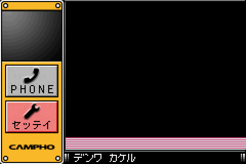
The first attempt at rendering camera pixels worked... but not quite right.
There was a problem, however; only the very bottom of the screen had changed color rather than the entire 176x144 window that displayed camera output. After a bit of thinking, I wondered if the image was actually divided up and transferred in several slices rather than all at once. Going back to the code that processed that 16-bit ID, I found out that it actually processed a small range of IDs, 13 in all, 0xAA00 - 0xAA0C. Now things were starting to make sense. The last byte of the ID indicated which slice of pixel data was written, from top to bottom.
That seemed like the right answer at first, however, 144 lines cannot be evenly broken up into 13 separate segments. My next task was to figure out how exactly the Campho returned pixel data. To check, I started added code to GBE+ to handle camera input, cycling through each ID and reading the necessary bytes for each pixel. The trick here, however, was drawing a simple gradient. Any visual interruptions in the gradient would allow me to see if the Campho Advance was drawing anything out of the order I had expected. When that happened, I'd try to reprogram GBE+ to properly display the gradient.
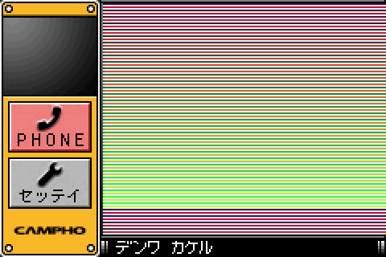
The gradient helped detect errors when rendering camera input.
There are white gaps to visually confirm lines are rendered in order (even and odd).
After a fair bit of work, I finally saw how the Campho Advance was doing things. Honestly, it's kinda weird. It definitely makes sense, but it's still weird. The first slice is only 12 pixels high, and the rest of the slices are 13 pixels high. A few of the first couple of lines in later slices are duplicates of the previous one, so in other words, there's technically some overlap between each slice. Generally it's just 2 lines, but the last slice uses 3 lines. The chart below illustrates which slice draws which lines of the final camera image. It's not as nice and clean as I'd expect (144 lines should get you 12 slices of 12 lines each...), but hey, that's just how it works.
--------------------- Slice | Lines Drawn --------------------- 0 | 0 - 11 1 | 11 - 23 2 | 22 - 34 3 | 33 - 45 4 | 44 - 56 5 | 55 - 67 6 | 66 - 78 7 | 77 - 89 8 | 88 - 100 9 | 99 - 111 10 | 110 - 122 11 | 121 - 133 12 | 131 - 143 ---------------------
With all of that sorted, I finally had a consistent gradient showing up in GBE+. Immediately, I added code to load a BMP file to see if I could get the Campho Advance to show an arbitrary image. Sure enough, this was successful! GBE+ was, however, only drawing a single frame. A real Campho Advance draws about 5 of those every second, and the image would be updated constantly. I decided it would be easiest to just count to a specific number of LCD VBlank periods (12 in this instance) and have the emulated Campho Advance draw the next frame at that time. One thing I found out was that the Campho Advance's software wouldn't read any more camera frames until it received the ID 0xCFFF. This evidently acted as a signal from the hardware indicating camera input was finished at the moment by clearing the Campho Advance's internal framebuffer.
So what about that third ID, 0xA900? The Campho Advance displays camera input as either a big or small image. The small 58x48 image presents the user's own face when entering the settings menu or during an active call with someone else. I concluded that this last ID had to be related to the smaller framebuffer. As I mentioned before, I couldn't get it to work. While I could get the 0xA900 ID to read a given length of bytes, it effectively soft-locked the Campho Advance whenever I fed it pixel data.
Unlike the larger framebuffer, which gets temporarily stored in a decent chunk of unused RAM, the small framebuffer actually gets pushed to the stack. It's quick and it's dirty, but if you just want to store a teeny bit of data that only needs to be accessed like once, sure, why not? The problem is, if you push too much stuff to the stack, you can start corrupting data in other places, like other parts of RAM that hold executable code, such as the Campho Advance's Program ROM. Generally, the stack is only supposed to be so big, and I ended up pumping a lot more data than the software ever expected. What happened here was a classic stack overflow. Yes, I caused it. This was all my fault. I'm sorry...
Generally, any program should check the length of any transfer. Ideally it should either limit the number of bytes sent or abort the transfer as invalid. The Campho Advance does neither, likely because the hardware was designed to send a constant amount of pixels back to the GBA's CPU. It's something predictable that shouldn't change, unless something seriously goes wrong. But, as the Campho Advance itself demonstrated with its messed up cartridge data bus, mistakes can happen. In any case, I had to significantly reduce the number bytes GBE+ returned when emulating the Campho Advance's smaller framebuffer. Once again, I tested a gradient pattern until I found the right amount of data to send.
The small framebuffer was also divided into slices, however, there were only 2 now. Just like the larger framebuffer, the last byte of the ID changed to read from a specific portion of the image, so just 0xA900 - 0xA901. The first slice measures in at 58x35, meanwhile the second one comes in at 58x13. Additionally, the slices don't overlap. Those numbers might seem strange to some. Why not split it evenly in half and have each slice be 58x24? I can't be 100% certain, but I think there's a limit to how much data the Campho Advance will transfer per slice, somewhere between 2K and 2.5K pixels. Regardless of all that, GBE+ could now emulate camera input on the Campho Advance!
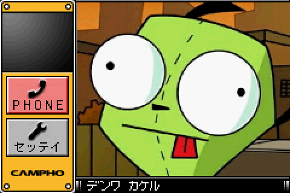 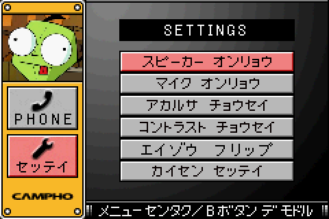
Both the small and large framebuffers were now rendered correctly.
Setting the Stage
Before doing any research on the Campho Advance's telephony, I wanted to play around with its settings. Once again, the Campho Advance draws all of its graphics as 15bpp bitmap images pulled from Graphics ROM. Everytime a new screen or new menu or even a new cursor needs to be drawn, the Campho Advance reads Graphics ROM. Since GBE+ halted if an unknown/undumped bank was accessed, I had to constantly extract new banks on a case-by-case basis. The IDs used for each bank were still baffling, although there ultimately was an easy explanation and solution for that, which I'll detail later.
After dumping many individual banks from Graphics ROM, I finally had enough data to access every menu. The settings include stuff such as speaker and microphone volumes for the earpiece, video brightness and contrast, vertically flipping camera input, and selecting pulse or tone phone dialing. The camera's input may need to be inverted because the Campho Advance is compatible with both the original GBA (which inserts cartridges from the top) and later models such as the GBA SP (which inserts cartridges from the bottom). Because the orientation of the Campho Advance changes depending on the model, users can optionally rotate the camera's image 180 degrees. It's worth pointing out that the Campho Advance initially advertised itself with mockups showing the original GBA, but upon release Digital Act promoted the new GBA SP in its marketing and artwork.
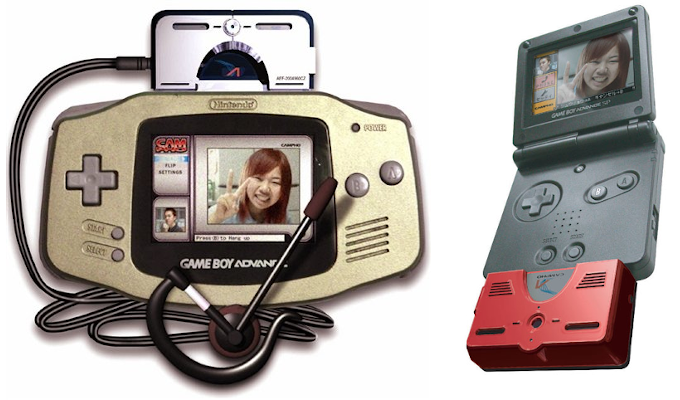
The original design vs. the final design. The Campho Advance works on all GBAs, so the camera input needs to flip.
Digressing, whenever I tried changing a setting when emulating the Campho Advance, GBE+ received several new and unknown commands. Apparently, each setting has its own dedicated command. The command itself was very simple, as it only took in a pair of 16-bit parameters. The lower half was a constant number (0x02 before being warped by the weird data bus), while the upper half was an integer that went from 0 to 100 in increments of 10. It was all straightforward enough and easy to convert each setting into a given percentage. The image flip setting was a bit of an outlier, however. It only took in a single 16-bit parameter, which was always zero. Apparently, just calling the command was enough to invert the camera.
It didn't take long to implement these commands in GBE+, however, there really wasn't much the emulator could do with them just yet. The Campho Advance had to actually read the saved settings in order to be useful. Thankfully, the device has a command for that purpose. Unlike the commands used to write settings, there's only one that reads them. Instead of having 5 separate commands, the Campho Advance just reads back all the settings at once. At first I had no idea what the format of the data should have looked like, so I just used my homebrew setup to run the command on a real Campho Advance and see what the results were. The chart below shows the layout of each byte:
------------------------------------------------ Address | Description ------------------------------------------------ 0x00 - 0x01 | Data Type LSBs - Always 0xFFFF 0x02 - 0x03 | Data Type MSBs - Always 0x1FFE 0x04 - 0x05 | Speaker Volume 0x06 - 0x07 | Microphone Volume 0x08 - 0x09 | Video Brightness 0x0A - 0x0B | Video Contrast 0x0C - 0x0D | Video Image Flip 0x0E - 0x0F | Pulse or Tone Dialing 0x10 - 0x17 | Unknown ------------------------------------------------
I was pretty surprised with the first 32-bits of data. From what I had seen of the Campho Advance, any time it wanted to return data, be it Graphics ROM or camera pixel data, the hardware generally returned a 16-bit ID followed by a 16-bit value representing the total number of bytes being read. This didn't appear to be the case when dealing with settings. Aside from that, everything else was basically as expected. Image flipping and pulse/tone dialing was handled as boolean values (where tone dialing is the default at zero). Interestingly enough, there was yet another command on the Campho Advance that saved the all of user's most current settings. The format was basically the same as the chart above, so it wasn't hard to implement.
First Contact
With settings out of the way, next was dealing with contact data. The Campho Advance dedicates some internal storage to a simple database that stores names and phone numbers. Users can quickly pull up stored contacts and speed dial them up. This avoids the cumbersome process of using the GBA's D-Pad to manually input individual digits. Exactly how contacts were stored was a complete mystery, so I was eager to see what was going on. Like everything else on the Campho Advance, the software sent a command and some parameters to the hardware. The logs from GBE+, however, were rather puzzling when I tried saving a test contact. The initial part of the command looked almost identical to the command meant used to save user settings... What was going on?
Saving user settings and contact data both used the 0xB778 command ID, but the 32-bit data they sent afterwards was different. User settings always had the value 0x1FFE4000 as its first parameter. Meanwhile, contact data strictly used 0x----4000, where the upper 16-bits was variable. Evidently, the command would process data differently based on those bytes alone. I reasoned that the upper 16-bits kept changing because it was trying switch between different entries in the contact list. In that case, it should have been a simple number used as an index. It was actually a slightly more complex than that, but for the sake brevity, let's just say the index was actually 8-bits. With that sorted, I took a look at the raw data used to write contact info. The section below explains how the 28-byte tables are formed:
------------------------------------------------------ Address | Description ------------------------------------------------------ 0x00 - 0x01 | Metadata - Always 0x0831 0x02 - 0x03 | Data Length - Always 0x0003 0x04 - 0x05 | Contact Index 0x06 - 0x07 | Always 0xFFFF 0x08 - 0x11 | Contact Name (10 characters max) 0x12 - 0x1C | Contact Phone Number (10 digits max) ------------------------------------------------------
Pretty clean and understandable. But what exactly was the format for contact names and phone numbers? Many times, especially with embedded software, developers will come up with some custom variant of an established character encoding. This is very common for anything that tries to mix Latin characters and Japanese kana while maintaining 8-bit character codes. There are practically dozens of ways to do it, and everyone invents their own, at least from what I've seen. The Campho Advance is no different. After creating various contact names, I found that it essentially used ASCII for Latin script, while the katakana character codes were roughly similar to JIS X 0201. Most of the symbols in either language were eliminated though. The only other thing worthy of note is that names and numbers are null-terminated strings if they are less than 10 characters long.
Using this information, I almost got GBE+ to start saving contact information correctly. However, for some reason, I couldn't get the software to write to anything but the first contact. At this point, I noticed another unknown command popping up: 0xD778. It only used a single parameter, which was simply zero, and after sending the command the Campho Advance seemed to return a single 16-bit value. My intuition was that this command returned the overall length of the contact list. I hadn't seen any way the software accessed the size of contact data, so I felt this command was the missing mechanism. My hunch was correct, and after that GBE+ started saving multiple contacts without any problems.
Reading contact data was the same as reading user settings. As previously mentioned, the first 32-bits determined if either user settings or contact information was requested. Once that functionality was added to GBE+, contact information was almost fully emulated. Naturally, all of this was stored in and loaded from a binary .sav file. The only thing left was to actually delete contact entries. A separate command, 0x1779, erases a specific contact from the list, with the parameter being the contact's index.
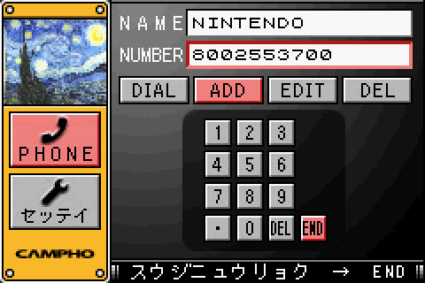 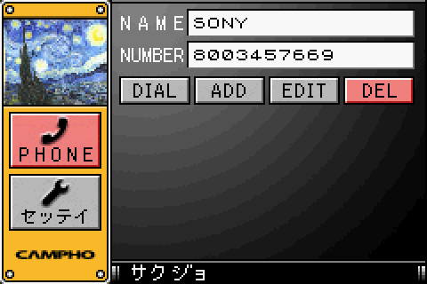
Call up your favorite companies and tell'em you emulate all their games! (just kidding..)
Dumping the Undumped: Electric Boogaloo
At this point, GBE+ was able to emulate a fair amount of the Campho Advance. It could boot and load the main menu, change various settings, and edit/save contact data. The next obvious thing to do was finally emulate the cartridge's video calls. Before that, however, I wanted to address Graphics ROM. There had to be a way to dump every bank automatically without having to manually input every 32-bit ID associated with those banks. I was still quite confused as to how the IDs actually worked. As I mentioned previously, they seemed quite random whenever the Campho Advance drew new portions of a screen.
After a brief discussion with Endrift on Mastadon, we determined that the IDs being used were actually pretty simple and sensible. The main problem was that, like everything else on the Campho Advance, the IDs were warped to account for the messed up data bus. As it turns out, the bank IDs do go something like 10, 11, 12, but thanks to the hardware, they have to be rotated to hex values that look something like 0x4050, 0x6001, 0x8001. Additionally, banks aren't necessarily accessed in sequential order when drawing the screen, which further added to the sense of randomness!
However, once it was understood how these IDs worked, I started developing a new homebrew program to dump the entirety of Graphics ROM. There were several challenges to overcome first. Each Graphics ROM bank has 32-bits of metadata at the start. The format is just like everything else on the Campho Advance: a 16-bit value used to identify the category of data and another 16-bit value representing the data's total length in bytes. After that was a chunk of bitmap pixel data. The first problem here is that some banks simply have a length of zero bytes. Essentially, these are unused for whatever reason, so the homebrew program had to account for that.
The 32-bits of metadata is actually read separately from the graphics. The Campho Advance designates a special offset address to access the metadata: 0xFFFFFFFF. This offset must be read first before graphics data becomes available. More specifically, reading from this offset alerts the Campho Advance to start reading from a new bank, otherwise it's possible to read data from the last Graphics ROM bank that was used. Once a command to read the bank's metadata is sent, the Campho Advance will repeatedly check the value of ROM_STAT to see if it's equal to 0x4015 or rather 0xAA when adjusting for the data bus. The code loops around a few thousand times constantly pinging ROM_STAT for a change.
If ROM STAT eventually changes before the loop exits, that means the Graphics ROM bank is valid and can be accessed. If not, that means there was some sort of I/O error preventing it from being read. I don't know if the bank actually exists or somehow isn't mapped in or what, but for the purposes of my homebrew program, I had to detect these banks and skip them. These I/O errors were very helpful in determining how many Graphics ROM banks were inside the Campho Advance. After a certain point, every single ID I used for these banks started returning I/O errors, which probably meant I had reached the limit. All in all, the Campho Advance uses bank IDs of 0 through 319. 2 banks have zero-lengths, and 4 banks respond with I/O errors.
--------------------- Bank ID | Error Type --------------------- 0 | Zero Length 1 | I/O Error 2 | I/O Error 93 | Zero Length 315 | I/O Error 316 | I/O Error ---------------------
I don't know why, but some Graphics ROM banks are simply invalid.
I remade my homebrew program multiple times, but finally I had something that could dump all known banks from Graphics ROM. Since the bank IDs were demystified at this point, I also had to go back and change the way GBE+ handled things. Rather than use a complicated binary file that had a massive header with metadata mapping out individual banks, GBE+ simply read the whole Graphics ROM dump. The Campho Advance already provided 16-bit metadata describing the length of each bank, so the emulator could separate everything using that information. I was one step closer to having a complete dump of the cartridge. The new binary file was just the bootstrap, Program ROM, and Graphics ROM all put together.
Something was still missing, however. The bootstrap didn't contain the Nintendo logo that every GBA cartridge needed to have. Without that, the GBA's BIOS would refuse to boot. While there may have been ways to bypass the BIOS check - such as what the Wisdom Tree games did on the original Game Boy - I doubted that was the case with the Campho Advance, given its status as an officially licensed product. There had to be more to the bootstrap that I couldn't access. From the beginning I had suspected that the Campho Advance's full bootstrap contained the Nintendo logo and some cartridge header info, but due to the way the device streams ROM data, the CPU couldn't re-read any bytes that were already accessed.
The BIOS is the first bit of code that the GBA's CPU runs, and it immediately makes several dozen reads from the inserted cartridge. My homebrew loaded up via MultiBoot, which only executes after the BIOS has finished reading stuff from the cartridge. The internal data pointer inside the Campho Advance that streams bytes of ROM from the bootstrap had already moved past crucial data required for a full dump. This wouldn't be a problem if the Campho Advance had some way changing its internal data pointer, but I had seen no evidence that was achievable via software. However, if it couldn't be done digitally, perhaps it could be done physically?
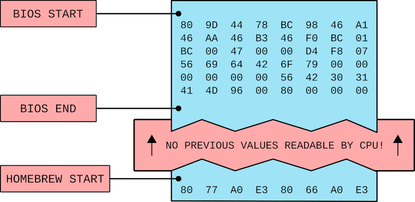
A graphic illustrating how the BIOS affects reading the bootstrap.
As a reminder, the Campho Advance requires constant power in order to work. The power has to be on so the GBA can boot normally and MultiBoot homebrew loaded later on. Once the homebrew is safely stored in the GBA's Work RAM, what would happen if I unplugged the Campho Advance's power cable, then put it back in? Without power, the Campho Advance should have gone through a total reset, including that internal data pointer. From there, I could read the full bootstrap, getting the data the BIOS would normally make inaccessible. Could it really be that simple? Just take the cable out and stick it back in? I am delighted to report that yes, that's all that was needed!
By resetting the internal data pointer, I was then able to get the complete bootstrap. As far as I understood, I also now had all the data the Campho Advance used. The new portion of the bootstrap was pretty fascinating. It was tailored to work specifically for every read requested by the GBA's BIOS. These reads are consistent and predictable, so there aren't any surprises that would prevent the Campho Advance from booting.
As expected, the newly dumped portion of the bootstrap also included the "Nintendo" logo, along with some other data that would normally belong to the ROM header of a normal cartridge. Here, I found several intriguing tidbits of previously unknown information. First, the Campho Advance uses a unique Game Title, a 12-character field that contained the ASCII string "VidBoy". Apparently, at one point, the product or internal project name may have been "Video Boy". Perhaps due to trademark issues it was eventually renamed Campho Advance. In any case, its fascinating to see some leftover evidence like this.
Next, the Campho Advance's 4-character Game Code was "VB01". Normally, cartridges have Game Codes that follow a set format; specifically, the first character denotes the class of cartridge ("A", "B", or "C" for regular carts, "U" for Solar Sensor carts, "Z" for media players like the Jukebox or Play-Yan, etc). The second character denotes the language/region ("J" for Japanese, "E" for USA/English, "P" for Europe, "F" for French, etc). This Game Code is typically seen on the sticker of a cartridge as well, though in a longer format. For example, the USA version of Super Mario Advance reads "AGB-AMAE-USA"
The Campho Advance does not follow these rules. "VB01" is technically an invalid Game Code. The "V" character is already reserved for Rumble Carts like Drill Dozer, and "1" does not match any region/language. If anything, it reads like a version number, i.e. "Video Boy V1" or something like that. This data isn't important for the BIOS, and I'm guessing Nintendo wasn't too stringent when it came to checking and approving Digital Act's software (a normal game developer would have far more scrutiny thrown at them). Given how far removed the Campho Advance is from a regular cartridge, no one probably thought it mattered anyway.
Finally, there's the Device Type field in the ROM Header. This single byte describes whether or not the cartridge is a Debugging And Communications Systems unit, or DACS for short. These are essentially special cartridges used by developers to test certain software. They have some weird ROM mapping as far as GBA cartridges are concerned. There was one (and only one) cartridge of this type ever released commercially: the Joy Carry Cartridge. That's a story for another article down the road, but to summarize things quickly, a DACS cartridge is almost like a flashcart.
As far as I can tell, the Campho Advance is no DACS. If anything, it's an entirely separate beast. For whatever reason, the ROM Header data here is just plain incorrect. I suspect that at one time the developers at Digital Act were using a DACS to make the Campho Advance's software. Obviously when the time came, they starting making their own hardware. After that switch, they likely never bothered to change the Device Type. As we've seen, it's not like Nintendo really got on their case to fix such small details.
Regardless of all the oddities I discovered in the ROM Header, one thing stood out to me after all of this research into the bootstrap. The Campho Advance was painstakingly built around the GBA's BIOS, down to every single read and write. Simply reading 1 or 2 more bytes would throw everything off. As a result, the Nintendo DS would never be able to boot the Campho Advance. All firmware versions for the DS and the DS Lite have code that make several reads on startup to Slot-2 to detect whether a GBA cartridge or DS accessory is inserted. Those reads will affect the Campho Advance's internal read pointer, which messes up the bootstrap. Ultimately, the Campho Advance was not designed to handle such reads from a DS, and the newer handhelds assume no valid cartridge is in Slot-2 when booting without the power cable. I believe some fancy homebrew could work around this, but for now it's not something on my radar.
I can see you. Can you hear me?
The last unemulated item on the Campho Advance was its telephony. To me, this area seemed the most daunting, as I know virtually nothing about analog telephone systems. Even though I grew up with a landline (and still have one), it's all magic as far as I was concerned. I didn't know what kind of tricks the Campho Advance would pull or how much the GBA itself would be responsible for managing the modem. Furthermore, I'd have to rely exclusively on reverse-engineering the Campho Advance's Program ROM to get any answers. Even if I wanted to hook up the hardware to my own house's line, I didn't have enough info yet to make a suitable homebrew test.
For the most part, it was easy enough to figure out how the Campho Advance tries to initiate a call. Once the user inputs a phone number and dials it, a single command is sent: 0x3740. It's very simple in that it has no return value. Instead it just writes a handful of parameters. The first is the total number of digits (up to 10 total) followed by the actual digits written as an ASCII string. Other than that, the Campho Advance did nothing special; it just waits indefinitely on an animated screen indicating it was making a call. The question now was how did the software know when someone had received the call and had picked up?
I assumed there was some kind of mechanism where the Campho Advance would be alerted about an incoming call, something like an interrupt or code that constantly checked for a status change. I shuddered to think what sort of horrors might await me if Game Pak IRQs were enabled, since the cartridge could potentially rely on arbitrary data that's hard to decipher just by looking at the code. Thankfully, that wasn't the case at all. Game Pak IRQs weren't turned on. In fact, the only IRQ the Campho Advance used was VBlank. In that case, the Campho Advance had to be manually and frequently checking for incoming calls. But where would it do that?
Going back to camera input, the Campho Advance alerted its software every time a new frame was ready. The cartridge's programming was built to continually check for new camera data when idling, which it does quite a lot (the software really is mostly just a menu). When receiving data from the cartridge, the software checked for a pair of 16-bit IDs, 0xA9-- for a small framebuffer and 0xAA-- for a large framebuffer. However, while looking through the code in Program ROM, I noticed that a third ID was also present, 0xAB00. I had assumed that entire section dealt entirely with camera stuff, but it crossed my mind that this would be an ideal opportunity to ping the current state of the modem as well.
The code did some dynamic branching, so I couldn't see where the third ID went using Ghidra alone. Instead I had to use the debugger in GBE+ and force the third ID to show up by hand. After receiving the ID 0xAB00, Program ROM then expects 3 more 16-bit values. The first is the total length of data sent by the cartridge, in this case just 4 bytes altogether. The other bytes were related to telephony, although it took a great deal of snooping around to figure it all out. As I understood it, the rest of the bytes represented a reference to an Internal Phone Function that gets executed later and the current Modem Status. The Internal Phone Function is a callback represented by a value of 0 - 5. A switch table in Program ROM then decides what function will be run after the Modem Status is handled. There are only 3 functions that actually do anything: one returns to the main menu, one pauses all menus and screen updates, and the last displays a strange, undocumented menu...
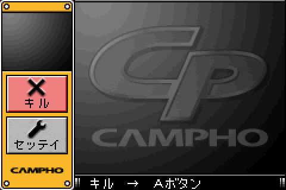
This menu was not documented in any of the materials that came with the Campho Advance.
At first, I had no clue what this weird menu was supposed to be. It looked just like the main menu, except the topmost button had a big fat X on it with the word キル underneath it. For those unfamiliar with katakana, this reads as "kiru" when written in Latin characters. At first, I mistook it for a transliteration of "kill" in English. That sounded a bit extreme... However, given that the purpose of this menu was to return to the main menu, it was probably just using katakana to write the verb 切る, which means to hang-up or disconnect. So, evidently this menu was related to an active phone call?
I had some trouble actually confirming this. Although I have a working landline, I couldn't even get that far with my Campho Advance (the call never goes through all the way), so I had no idea what the screen of an active phone call looked like. Curiously, the manual of the Campho Advance was of no help either. It didn't have a picture, nor did it mention this menu in its text. You'd think the box would at least have a photo of the Campho Advance in action, but sadly there were only 3D renderings and photoshopped images. Amazingly, there is one documented instance of someone making a Campho-to-Campho call. One night, while randomly searching for pictures on Google, I stumbled across an image from a Japanese reporter apparently testing out the Campho Advance live in person. There on her screen was the same big black X! This was definitive proof that the undocumented menu was in fact the call screen.
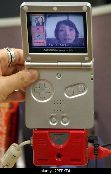
This single image helped solve a mystery and ultimately save the Campho Advance.
Credit: Katsumi Kasahara / Associated Press
Evidently, the image was taken from a news broadcast from Japan that aired shortly before the Campho Advance launched. Recently, the entire segment was found and posted online by Neon Polygons. I'd highly recommend watching Neon Polygons' other video demonstrating his earlier attempts at connecting 2 Campho Advances via landline. Apparently, the creator of the Campho Advance stumbled upon this and sent over the lost TV footage. This news broadcast is especially important for preservation, as it shows us how the device actually worked in real-life. Unfortunately, by the time it became available, I'd already finished my research (and was in the middle of typing this very article), but it does help confirm several of my findings.
Moving on, the Modem Status is also a simple value of 0 - 5. This corresponds to different states of the modem, which should be as follows: Idle, Dialing, Call Connecting, Call Connected, Answering, and Ringing. Only the last one could be confirmed by going through Program ROM's code. The rest had to be pieced together via ASCII strings floating around the ROM. Only a value of 5 seemed to trigger anything, which causes the user to display an animation for an incoming call. I'm compressing a lot of work spent chasing down leads and dead-ends in Ghidra, but for the most part telephony on the Campho Advanced turned out to be quite simple. Here's a basic rundown of how it goes, from what I've pieced together.
Let's say Alice wants to call Bob using her Campho Advance. She dials his number, and the Campho Advance starts doing its thing. Her Campho Advance's Modem Status will gradually move from Idle, to Dialing, to Call Connecting, to Call Connected, assuming Bob picks up. On Bob's end, his Campho Advance will detect a change in its Modem Status from Idle, to Ringing. At this point, both Alice and Bob's screens display animations about making a call and receiving a call respectively. For the call to go through, Bob simply has to press the A Button. On Bob's end, the Modem Status switches to Answering, then to Idle. Once Idle, his Campho Advance receives a value for the Internal Phone Function that triggers the active call screen. On Alice's end, her Modem Status switches to Idle and likewise receives a value for the Internal Phone Function for an active call. Once all that is complete, the two sides should now be in a call session.
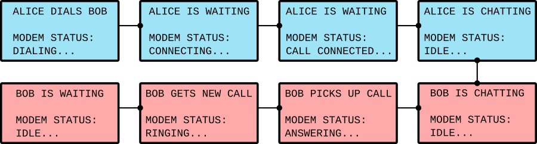
A general overview of how 2 Campho Advances initiate a call.
Or something like that. Again, I couldn't verify any of this since I didn't have any suitable homebrew. At the least, the above description is roughly the way I set things up when I started implementing some networking into GBE+ to handle the telephony. This worked out pretty good. Each side could initiate a phone call, and simultaneously both would display their animations before one user accepted a call. Once the call went through, both users were dropped into the active call screen. That much was like 33% of the work done, the rest being audio and video transmission. But, there was a problem, I had no idea how the cameras were supposed to be activated.
There are 3 commands the Campho Advance's software uses to control the camera: start/send camera input to the small framebuffer, start/send camera input to the large framebuffer, and halt all camera input. When I connected 2 emulated Campho Advances together through GBE+, however, I could find no command that would turn both of them on at the same time. The user's face should appear in the small framebuffer while simultaneously showing the receiver's face on the large framebuffer. I checked the code in Ghidra multiple times but saw nothing. After an active call was established, Program ROM issued a command to halt camera input and that was it.
As I thought about it more deeply, perhaps I had been making too many assumptions. It wasn't strictly necessary that the software had to issue a dedicated command to enable both framebuffers. For all I knew, after a call was established, the cameras would automatically enter in a new mode where both framebuffers were active. Although I disliked not being able to validate this via hardware, I did come up with a way to partially test this via software. I set GBE+ to display 2 different static images for each framebuffer. This data was pushed constantly through the 0xA9-- and 0xAA-- IDs described earlier. Normally GBE+ would only do one or the other depending on which framebuffer was enabled, but now it was forced to do both.
Typically, only the large framebuffer was shown on the main menu, and only the small framebuffer was shown when changing settings or entering phone number/contact data. This is true even if the Campho Advance somehow receives data for both framebuffers. On the other hand, when entering an active call, both framebuffers appeared onscreen simultaneously. It seemed after a call was established, the Campho Advance's code set a variable that allowed it to process input from each framebuffer at the same time. When there was no active call, one of the framebuffers was disabled, even if the Campho Advance tried to give it some pixel data.
It's not conclusive, but it gave me more confidence to say that the Campho Advance likely automatically enables both framebuffers once a call connects. Thinking even deeper, the Campho Advance can be used to send and receive regular phone calls as well, just like a normal telephone. It makes sense that the modem should handle this distinction automatically, and the hardware inside the Campho Advance should also handle camera input without intervention from the GBA. Ideally, during an active call, all the GBA needs to worry about is reading the framebuffers if and when the Campho Advance has that data.
With all of this seemingly settled, I started fleshing out GBE+'s network code for the Campho Advance to include the framebuffers. After some more testing, I was able to successfully get each side to display the other's chosen image.
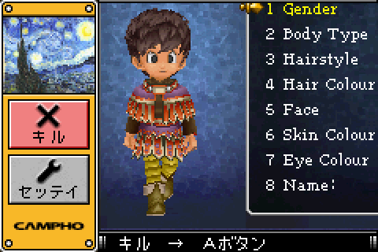
I just used 2 random images from my computer to test if the emulated Campho Advance could transfer video correctly.
Now, only one question remained: how did the Campho Advance handle audio? For a time, I considered that, like the framebuffer data, the Campho Advance might have a way to receive audio samples. However, this idea was naive for several reasons. First, the GBA would only need to interact with samples if the handheld itself was used for audio playback. The quality would not be ideal due to the way the GBA's sound system works. Secondly, why have the GBA even touch audio when the phone modem is perfectly capable of doing that job on its own? The main purpose of the modem is transferring users' voices, after all!
I eventually decided that all audio was handled internally by the Campho Advance. The code in Ghidra backed up this view, as none of the GBA's audio hardware was ever touched in Program ROM. From an emulation perspective, GBE+ could take a high-level approach here by simply grabbing the user's microphone input and transferring that over a network. Fortunately, SDL natively handles microphones, and I'd already had some experience using them back when I emulated the GBA Jukebox. The only difference here was adding a splash of TCP/IP to send packets full of audio samples.
Once the code was polished a bit more, everything was up and running as expected. GBE+ could now let users map specific IP addresses to phone numbers, allowing them to "dial" others over a network. Afterwards, two instances of the emulator would connect for a virtual phone call. Each side displayed images representing camera input, and both sent and received real-time voice data. The only notable issue was a slight echo, but other than that, the Campho Advance was finally, fully emulated.
Video On Demand
Well, almost fully emulated. Although sending/receiving camera framebuffers worked, it could only read a static BMP file. That's not very exciting, especially given the Campho Advance was all about live video conferencing. Naturally, the solution is to feed input from an actual camera into the emulator to give a more authentic experience. However, working with webcams is no small feat. SDL2, the main library GBE+ uses for just about everything, does not support webcam input. SDL3 does, but at the time I was doing all of this last year, there was no stable release yet. In any case, I was not going to update GBE+ to SDL3 until after the emulator itself also had a new stable release in April 2025.
So while SDL3 would definitely prove useful in the future, I needed something more immediate. My first thoughts turned to somehow using a web browser as an interface for the camera. Combining HTML5 and modern Javascript would give me access to any camera hooked up to my PC in a portable manner that would easily span both desktop machines and mobile phones. Current web browsers really are a marvel, being so advanced they're basically full-blown platforms in their own right. Back when I first started web programming (circa 2005), webcam input probably involved some variety of clunky and proprietary Windows-only Flash application with a couple dozen security vulnerabilities thrown in the mix.
These days, the browser just has so much built-in functionality, you can build a decent, small app without ever reaching for 3rd-party software. It's amazing considering what was available when I started. Trouble was, I honestly hadn't touched Javascript in any meaningful capacity since maybe like 2008. Things had changed quite a bit, to say the least. When I pulled up some docs on MDN regarding webcam access, well, it certainly showed I hadn't kept up with much of anything. What in the world is a "promise"? When did const variables suddenly become a thing? We can use let for block scope now? And for some reason no one's using XmlHttpRequest() anymore? What happened to AJAX and Web 2.0? Is XML dead???
To summarize everything, I had a few things to learn. Thankfully it wasn't too much trouble to get rid of some outdated habits, especially since my plan was simple and straightforward. The idea was to have a webpage with some embedded Javascript to handle the camera and some networking. This app would initialize the webcam, grab the image at ~5FPS, downscale it, then send it to an instance of GBE+. The emulator would periodically check for any incoming transfers from the webapp and receive the necessary pixel data at that time. In the end, by relying on a network connection to the webapp, GBE+ could bypass SDL2's lack of webcam support.
Once the camera is initialized, it grabs a frame, shrinks it down to 176x144, then breaks each pixel into an array of RGB values at 8bpp. That blob of data is then transferred over to GBE+ where it reassembles it into a framebuffer for the Campho Advance. The biggest problem I faced here was how to get the data from the webapp to GBE+. At the beginning, I had wanted to use WebSockets, however, I found that they weren't actually quite the same as the sockets I was used to dealing with in C++. All I really I needed was to just blast a large packet of data from one side to the other with minimal fuss.
Fortunately, Javascript has a function called fetch(). Contrary to its name, fetch() can actually be used to send data via an HTTP POST request. The only real caveat was that GBE+ would have to properly handle an actual HTTP transfer from the web browser. The emulator doesn't have to act as a complete HTTP server, rather it just needs to handle a single, predictable HTTP request. There were a few tricks to figure out, however.
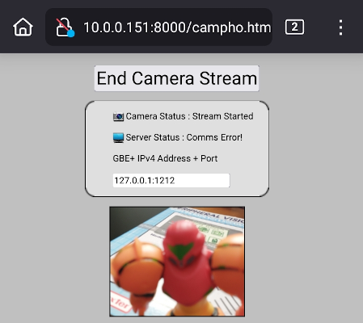
The webcam app works on anything from phones to laptops to desktops thanks to HTML5 and Javascript.
The webapp couldn't just keep firing POST requests whenever it wanted to. Both the app and GBE+ had to keep track of whether a request had been sent and completed. Only when the app detected that GBE+ had closed the TCP connection after the last request was processed would the app try to send the a new request. If this was not done properly, the app would continually send out requests that never got a response, since GBE+ couldn't handle them all, they'd just pile up in the debugging error log. In this case, GBE+ wouldn't actually get timely pixel data either.
Next, GBE+ had to wait for the webapp to send over all of the data before taking any further action. SDL_net has a function called SDLNet_CheckSockets() to actively see if there is an incoming transfer for a given socket. If the socket is in a ready state, any bytes from the transfer can be read. The problem here is that GBE+ would sometimes receive bytes from a TCP transfer, but not all the bytes. GBE+ had to wait for the transfer to finish completely and accumulate all the data first. Afterwards, the full HTTP POST request could be processed along with the binary data for the camera image.
Finally, GBE+ had to timeout the TCP connection if the actual transfer was taking too long. The data sent by the webapp is only 76KB, and it was only sent 5 times a second, so any transfer taking longer than 500ms was discarded. Despite being connected via my home Wi-Fi network, the webapp occassionally suffered these kinds of delays, although very rarely. I imagine they might be more common outside of LAN-like conditions. By closing the current TCP connection, GBE+ signaled to the webapp that a new transfer could start, making sure the webapp was never stuck on any single transfer.
GBE+ always responded with a 200 OK signal, even if the data wasn't completely received. For it's part, the emulator doesn't really need to care about following the HTTP protocol exactly in this case. The Campho Advance would apparently drop camera frames depending on the phone line, so this part of the emulator is actually accurate.
Once both GBE+ and the webapp were properly setup, I gave it a test. To my delight, everything worked as intended. The cool thing about using a networked webcam this way is that the camera doesn't even need to be anywhere near the computer running GBE+. It also turns any mobile phone into a dedicated webcam. Now, after nearly 20 years, the Campho Advance experience has been fully documented, emulated, and preserved.
A brief demo of Campho Advance emulation using 2 plastic figures (Samus and Mario). No microphones were used this time, however.
Where you AT?
The Campho Advance still had one last mystery to share. Out of curiosity, I checked out the code that handles button input on the main menu. I wondered if there was perhaps a hidden menu somewhere. There were a lot of seemingly unused strings in Program ROM, so maybe some kind of debug menu was out there waiting to be discovered. Like many cheat codes in older games, developers often hid stuff behind button combos that normal users would never press. As it turns out, there was specific programming that handled L+R+B. Due to the way the Campho Advance processes input every frame, all of the buttons have to be pressed on the same frame, so it's especially difficult to inadvertedly trigger.
What appeared was a so-called "Modem Test Mode" a simple menu with a text box and a virtual keyboard. Typing in anything would build a string, and pressing Start seemed to use that string as the parameter of a previously unknown command, 0x9FF0. Afterwards, it briefly displayed a "<-- Send to modem" message before the text box would be cleared. I guessed that Campho Advance was probably accepting some kind of standardized text-based commands that could be sent to modems. I had no idea anything like that existed since I hadn't worked with any sort of telephony tech before. After doing some searching, I suspected the Campho Advance was trying to accept AT Commands.
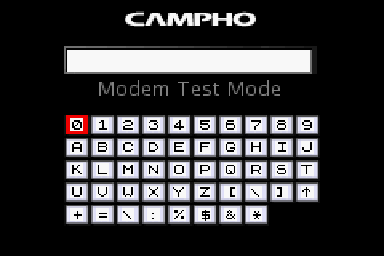
This mysterious screen was hidden away for almost 20 years!
To test this, I entered in one of the most basic commands on a real Campho Advance. This was simply the string AT. All the command does is setup the hardware for more AT commands, nothing fancy as far as I can tell. The Campho Advance sent this data to the modem and this time it returned an "OK" message! I assumed it had accepted the command as valid and had executed it. Throwing in random text resulted in an "ERROR" message, so it did indeed appear as if the Campho Advance was processing AT commands.
What's interesting about AT commands is that once the Campho Advance sends it to the modem, Program ROM reads the response data in a manner similar to camera framebuffers and telephony signals. That is to say, the software constantly checks for any incoming data from the cartridge, looks for a specific ID first (in this case 0x41A0), reads the length of data, then receives the rest of data. While there are all kinds of homebrew tests I could actually run to explore the Campho Advance's modem, that's something I might leave for much later.
That kind of information would be great for further documentation, but it really wouldn't make Campho Advance emulation in GBE+ that much better. Nearly everything about its telephony is accomplished via high-level emulation, and I'm not about to start recreating the entire modem via low-level emulation. I'm not that crazy, I mean, at least not yet... Nevertheless, GBE+ does emulate receiving the AT command described above, along with returning "OK" and "ERROR" messages. There is a framework here for future exploration. In any case, I just think it was really cool to once again discover something that had remained hidden literally for decades. It's not every day that happens, and it's yet another neat little bit of history that got saved.
Hanging Up
So there it is, folks. The Campho Advance, one of the more unique and interesting cartridges released for the GBA. This one was a tough nut to crack, mostly because no one had ever dumped the ROM but also due to the weird, messed up data bus that obfuscates read and write values. At first, it seemed like a steep challenge, one that left me a little uncertain about whether I could actually pull it off. Although the whole process proved difficult, it felt very rewarding to finally have this device emulated, to know how it works, and at last to see it preserved.
Campho Advances are kinda rare, and they aren't getting any cheaper or younger. Who's to say when the hardware will start giving out and become endangered? Many areas in certain countries are moving away from landline telephone systems in favor of wireless radio-based technologies or wired Voice-Over-IP solutions. Who knows when it'll be hard enough to even setup your own internal PBX or something similar. We shouldn't assume that there will always be a chance to study these bits of gaming history, especially in an ever-evolving world of hardware.
On that note, I'm relieved that the Campho Advance is now emulated by GBE+. That's a load off my shoulders. I can go to bed with one less worry hanging over my head. There's quite a lot to learn from Digital Act's product, as it demonstrated a practical, economical approach to making videoconferencing more widely available. Even if its attempts were not an overwhelming success, they did manage to push the boundaries of what the Game Boy could do while showing people that videochats weren't necessarily complicated or inaccessible.
With that, the incredible saga of the Triforce of Terror comes to a close. The last 3 GBA cartridges with incredibly complex and mysterious hardware have been emulated. The Play-Yan, the Glucoboy, and now the Campho Advance are vanquished. Never again will they menace the world of video game preservation. As it stands, that means we can virtually recreate and play every single officially licensed GBA cartridge out there!
Or so it would seem... Unfortunately, when I came up with the whole Triforce of Terror bit, I had kinda sorta overlooked yet another GBA cartridge with special hardware inside that needed to be reverse-engineered. Whoops! To be fair, this thing was super obscure; the ROM hadn't even been dumped properly until I took a look at it. Additionally, at first, it wasn't really clear if it was supposed to be a DS or GBA product (the box is seriously confusing, see for yourself).
{kind=link}
Well, like any good RPG, there's always a "real" final boss at the end of some bonus dungeon. The other GBA cartridges may have been defeated, but one villain remains at large. In the next episode article for Edge of Emulation I'll tackle Agatsuma's TV Tuner, the only Nintendo-approved way to watch television on your GBA. This is really, really the last unemulated GBA cartridge. I mean, it has to be, right?
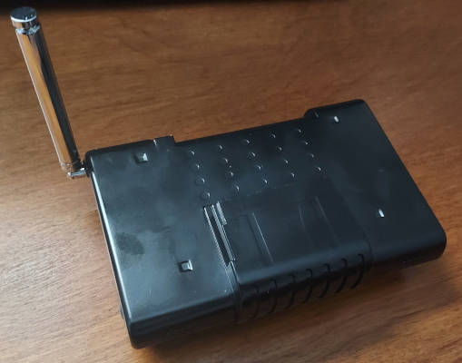